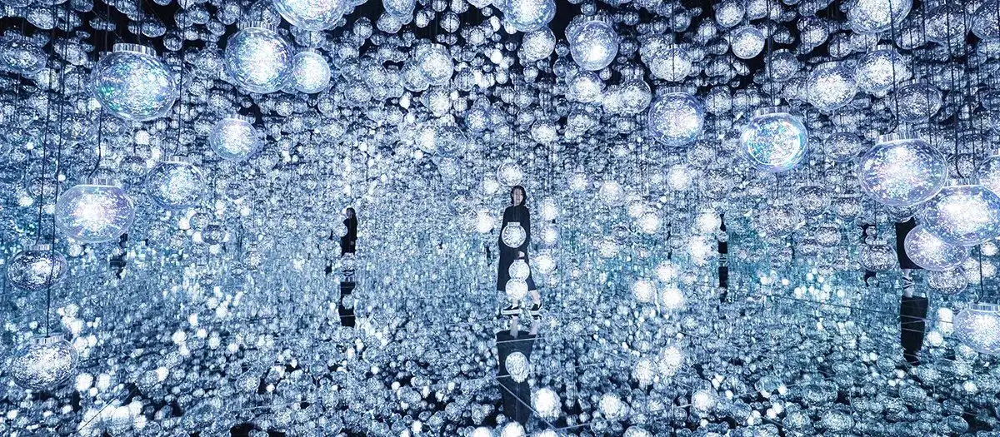
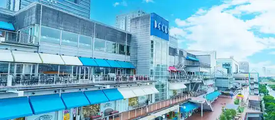

Minatoku, Tokyo: things to do, food and stays
Minatoku · Tokyo
Minatoku
Highlighted on the Tokyo map.

Sights
Mori Biru Dejitaruato Museum : Epuson Chiimurabobodaresu
Tokyo Joiporisu
Dekkusu Tokyo Beach

Rego Land Disukabarii Center Tokyo
Ado Museum Tokyo
Institute for Nature Study, National Museum of Nature and Science
Spiral
Nezu Art Museum
Aoyama Park
Tokyo Tower
Shibaura Minami Fu Atama Park
Kikuchi Hiroshi Jikki Nen Satoru Art Museum
Kyu Shiba-rikyu Gardens
Hatakeyama Memorial Museum of Fine Art
Dining
Shimbashi Hoshino
新ばし 星野

Japanese restaurant in Minatoku, Tokyo.
Ao
蒼

European restaurant in Minatoku, Tokyo.
Higashiazabu Amamoto
東麻布 天本

Seafood restaurant in Minatoku, Tokyo.
Matsukawa
松川

Japanese restaurant in Minatoku, Tokyo.
Shimazu
島津

Seafood restaurant in Minatoku, Tokyo.
Akasaka Raimon
赤坂 らいもん

Meat restaurant in Minatoku, Tokyo.
Akasaka Ogino
赤坂おぎ乃

Japanese restaurant in Minatoku, Tokyo.
Takiya
たきや

Seafood restaurant in Minatoku, Tokyo.
Trace
トレイス

European restaurant in Minatoku, Tokyo.
Hayato
隼

Chinese or Asian restaurant in Minatoku, Tokyo.
Sanwa
三和

Meat restaurant in Minatoku, Tokyo.
Japanese cuisine Seizan
日本料理 晴山

Japanese restaurant in Minatoku, Tokyo.
Maki Tori Shin Kobe
薪鳥新神戸

Meat restaurant in Minatoku, Tokyo.
Myoujyaku
明寂

Japanese restaurant in Minatoku, Tokyo.
L’Effervescence
レフェルヴェソンス

European restaurant in Minatoku, Tokyo.
Stay
The Okura Tokyo

The Okura Tokyo is a place to stay in Minatoku, Tokyo.
The Ritz-Carlton, Tokyo
ザ・リッツ・カールトン東京

The Ritz-Carlton, Tokyo is a place to stay in Minatoku, Tokyo.
Janu Tokyo
ジャヌ東京

ジャヌ東京 is a place to stay in Minatoku, Tokyo.
ANA InterContinental Tokyo
ANAインターコンチネンタルホテル東京 by IHG

ANA InterContinental Tokyo is a hotel in Minatoku, Tokyo.
Grand Hyatt Tokyo
グランド ハイアット 東京

Grand Hyatt Tokyo is a place to stay in Minatoku, Tokyo.
Mitsui Garden Hotel Roppongi Premier
三井ガーデンホテル六本木プレミア

Mitsui Garden Hotel Roppongi Premier is a hotel in Minatoku, Tokyo.
Hotel Toranomon Hills
ホテル虎ノ門ヒルズ

Hotel Toranomon Hills is a hotel in Minatoku, Tokyo.
Hotel Hillarys Akasaka
ホテルヒラリーズ赤坂

Hotel Hillarys Akasaka is a hotel in Minatoku, Tokyo.
Hotel Monterey Akasaka
ホテルモントレ赤坂

Hotel Monterey Akasaka is a hotel in Minatoku, Tokyo.
Roppongi Hotel S
六本木ホテル S

Roppongi Hotel S is a hotel in Minatoku, Tokyo.
remm Roppongi
レム六本木

remm Roppongi is a place to stay in Minatoku, Tokyo.
Villa Fontaine Grand Tokyo Roppongi | Sumitomo Realty & Development
ヴィラフォンテーヌ グランド 東京六本木｜住友不動産

Villa Fontaine Grand Tokyo Roppongi | Sumitomo Realty & Development is a place to stay in Minatoku, Tokyo.
ALFIT HOTEL & BAR AKASAKA

ALFIT HOTEL & BAR AKASAKA is a hotel in Minatoku, Tokyo.
Oakwood Hotel & Apartments Azabu
オークウッドホテル＆アパートメンツ麻布

Oakwood Hotel & Apartments Azabu is a hotel in Minatoku, Tokyo.
HOTEL MINATO Azabu-Juban
HOTEL みなと 麻布十番

HOTEL MINATO Azabu-Juban is a hotel in Minatoku, Tokyo.
Andaz Tokyo
アンダーズ 東京

Andaz Tokyo is a place to stay in Minatoku, Tokyo.
Henn na Hotel Tokyo Akasaka
変なホテル東京 赤坂

Henn na Hotel Tokyo Akasaka is a hotel in Minatoku, Tokyo.
The Lively Tokyo Azabujuban
ザ・ライブリー東京麻布十番（THE LIVELY 東京麻布十番）

The Lively Tokyo Azabujuban is a place to stay in Minatoku, Tokyo.
Candeo Hotels Tokyo Roppongi
カンデオホテルズ東京六本木

Candeo Hotels Tokyo Roppongi is a hotel in Minatoku, Tokyo.
APA Hotel & Resort < Roppongi Eki Higashi >
アパホテル&リゾート〈六本木駅東〉

アパホテル&リゾート〈六本木駅東〉 is a resort hotel in Minatoku, Tokyo.
APA Hotel Roppongi SIX
アパホテル〈六本木SIX〉

APA Hotel Roppongi SIX is a hotel in Minatoku, Tokyo.
The B Akasakamitsuke
the b 赤坂見附

the b 赤坂見附 is a place to stay in Minatoku, Tokyo.
Centurion Hotel Grand Akasaka
センチュリオンホテルグランド赤坂

Centurion Hotel Grand Akasaka is a hotel in Minatoku, Tokyo.
Sotetsu Fresa Inn Tokyo-Akasaka
相鉄フレッサイン東京赤坂

Sotetsu Fresa Inn Tokyo-Akasaka is an inn in Minatoku, Tokyo.